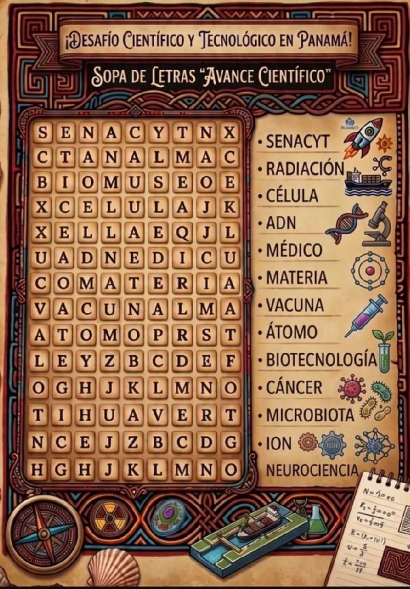
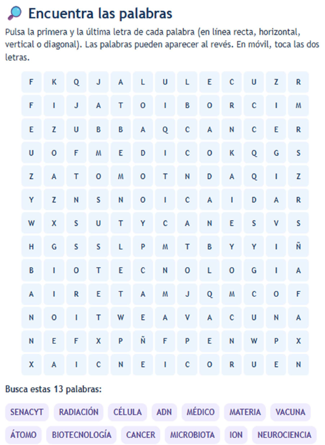

Ciencias Naturales
El secreto atómico: Medicina Nuclear contra el Cáncer
La física atómica al servicio de la salud en Panamá
¿Alguna vez te has preguntado... cómo es posible que, conociendo el comportamiento de partículas invisibles a la vista, podamos destruir enfermedades sin abrir un cuerpo?
El secreto atómico: Medicina Nuclear contra el Cáncer.
¿Cómo funciona?
En el Instituto Oncológico Nacional (ION), los científicos usan átomos inestables (isótopos radioactivos) mezclados con moléculas. Al entrar al cuerpo actúan como pequeños rastreadores “microscópicos”.

